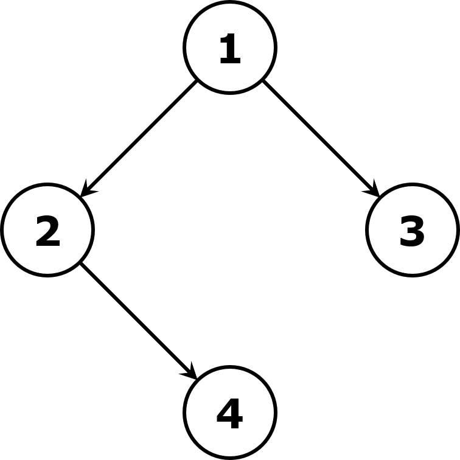
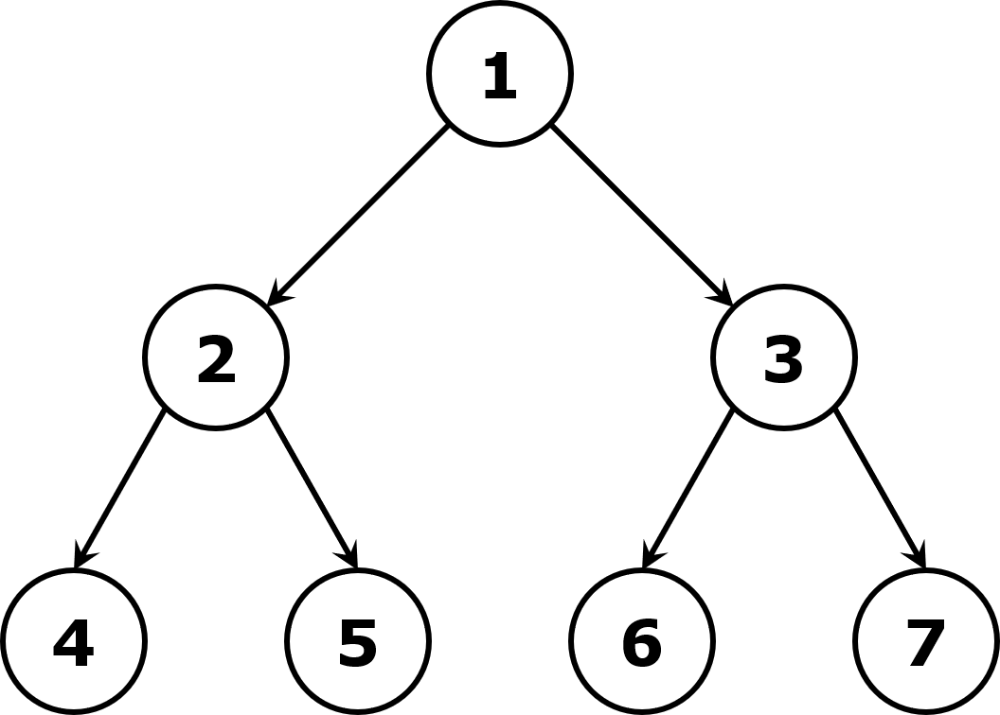

Solution to Algorithm Questions
LeetCode 1530 - Number of Good Leaf Nodes Pairs
Question 1530 - Number of Good Leaf Nodes Pairs
Given the root of a binary tree and an integer distance, a pair of two different leaf nodes of the binary tree is said to be good if the length (number of edges) of the shortest path between them is less than or equal to the distance.
Please write a function/method that returns the number of good pairs in the binary tree.
root: 
distance: 3
1
The leaf nodes of the tree are 3 and 4 and the length of the shortest path between them is 3. This is the only good pair.
root: 
distance: 3
2
The good pairs are (4, 5) and (6, 7) with shortest path of 2. The pair (4, 6) is not good because the length of the shortest path between them is 4.
Constraints and notes:
The tree is non-empty.
The tree may be very unbalanced.
d \ge 1 and O(d) \le O(n), where d is the distance and n is the number of nodes in the tree.
Dayu Wang's Solution
/** Definition for a binary tree node.
public class TreeNode {
int val;
TreeNode left, right;
TreeNode() {}
TreeNode(int val) { this.val = val; }
TreeNode(int val, TreeNode left, TreeNode right) {
this.val = val;
this.left = left;
this.right = right;
}
}
*/
class Solution {
/** DFS-Based algorithm */
// L[i] stores the number of leaf nodes with depth (i + 1).
private void leafLengths(TreeNode root, int distance, int[] L, int depth) {
if (depth >= distance - 1) { return; }
if (root.left == null && root.right == null) { L[depth]++; }
if (root.left != null) {
leafLengths(root.left, distance, L, depth + 1);
}
if (root.right != null) {
leafLengths(root.right, distance, L, depth + 1);
}
}
public int countPairs(TreeNode root, int distance) {
int left = 0;
if (root.left != null) { left = countPairs(root.left, distance); }
int right = 0;
if (root.right != null) { right = countPairs(root.right, distance); }
int L[] = new int[distance - 1], R[] = new int[distance - 1];
if (root.left != null) { leafLengths(root.left, distance, L, 0); }
if (root.right != null) { leafLengths(root.right, distance, R, 0); }
int preSumL[] = new int[distance - 1], preSumR[] = new int[distance - 1];
int count = 0;
for (int i = 0; i < distance - 1; i++) {
preSumL[i] += (i == 0 ? 0 : preSumL[i - 1]) + L[i];
}
for (int j = 0; j < distance - 1; j++) {
preSumR[j] += (j == 0 ? 0 : preSumR[j - 1]) + R[j];
}
for (int k = 0; k < distance - 1; k++) {
count += L[k] * preSumR[distance - 2 - k];
count += R[k] * preSumL[distance - 2 - k];
}
return count / 2 + left + right;
}
}
Time complexity: O(n \log{n})